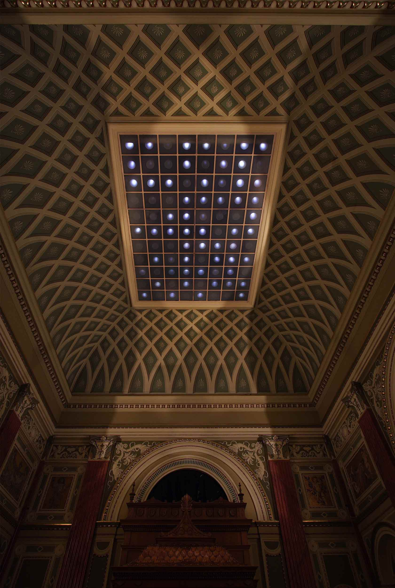

Mücsarnok / Kunsthalle
2006
Curated by Edit Molnár and Livia Páldi
The curators of this Nordic group show Edit Molnár and Livia Páldi invited us to do a site-specific
installation for the entrance lobby of
Budapest Kunsthalle.
We approach site-specificity in two alternative ways. Sometimes the whole idea of the art work comes from the
given or chosen exhibition space, from its social, political or historical context or simply from its
architectural qualities. Another way is to use some features of the exhibition space to work on themes that
interest us in general. This was the case in this particular exhibition.
Randomness as phenomenon and the way we perceive visual impulses have interested us from beginning of our
artistic career. These interests originally led us to work with blinking led-lights. For this show we decided
to do a new installation working on the same technical principles as several of our earlier led-installations.
The entrance lobby of Budapest Kunsthalle was a challenging exhibition space for minimalist work like ours.
The constant traffic trough the space with doors on every wall combined with the ticket office and cloakroom
activities made the space kind of restless. The rich and colorful interior did not help much either.
In a way we gave up on solving the challenge and resolved the problems by escaping them. We decided to darken
the space except for the ticket office and cloakroom and concentrate to work on the rectangular,
semi-transparent glass ceiling, 12.5 m above the floor. This type of glass ceiling, which provides the entire
space with even, natural light, is very typical for the museums of this period. The ceiling, about 6 x 8
meters in size, has 88 square glass panels in 11 x 8 grid format.
For our installation we covered the whole ceiling from above so that it let only little bluish light trough.
Under this cover we placed a light made of several leds above each opal glass panel. Each of these lights was
controlled by its own blinking led. This transformed the ceiling into a randomly changing matrix of 88 lights.
From below you could see only large light dots projected onto the square opal glass panels. The background of
the light dots changed from clear blue in mid day to dark grey at night. The light dots moving in the dark
void above added a meditative element to the otherwise active entrance lobby. A round black glass table in the
center of the room reflected the glass ceiling and the moving light dots. The seating group surrounding this
table functioned as a peaceful place for observing the installation.
